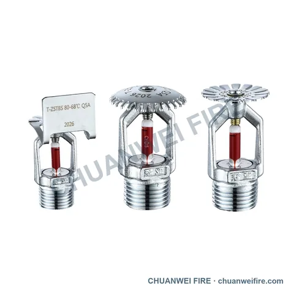
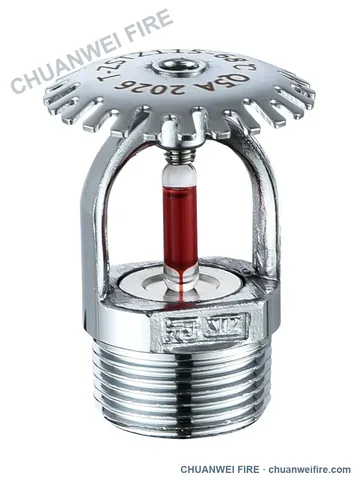
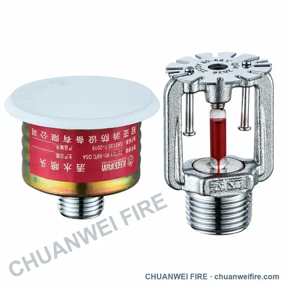
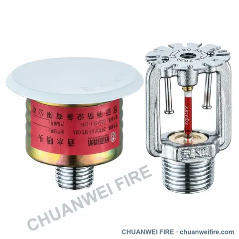
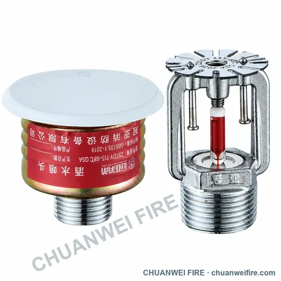
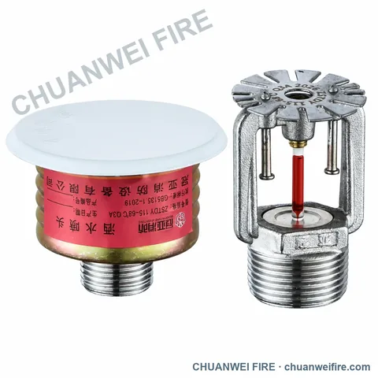
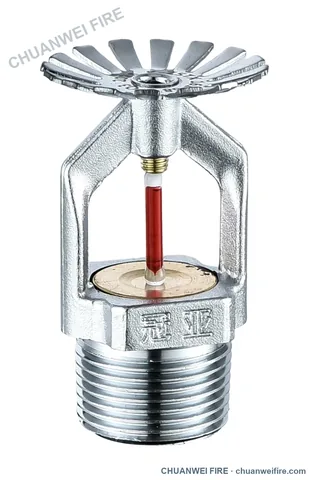
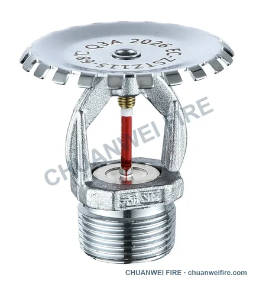

فئة المنتج
رشاشات الحريق
رشاشات قياسية وسريعة الاستجابة ومخفية وجافة، إضافة إلى فئات الرشاشات والفوهات المفتوحة للأغراض الخاصة.

اختر الرشاش وفق متطلبات النظام
ابدأ بنوع الاستجابة واتجاه التركيب، ثم أكد الموديل والوثائق المطلوبة لسوق الوجهة.
- حدد نوع الاستجابة واتجاه التركيب ومعامل K.
- أكد درجة التشغيل والمقاس الاسمي ونوع القلاوظ المطلوب.
- اذكر بلد الوجهة والوثائق المطلوبة لمراجعتها حسب الموديل.
أنواع المنتجات المتاحة
رشاشات الحريق
استخدم هذه الصفحات لتحديد نوع المنتج المطلوب. تُؤكد الأبعاد النهائية وضغط التشغيل والمواد ومعايير التوصيل والاعتمادات قبل عرض السعر.




رشاشات K80 مخفية ذات استجابة قياسية
رشاش مخفي K80 / 68°C ذو استجابة قياسية — المجموعة مع الغطاء والآلية المكشوفة.
موديلات ومواصفات إضافية

رشاشات K80 مخفية سريعة الاستجابة
رشاش مخفي K80 / 68°C سريع الاستجابة — المجموعة مع الغطاء والآلية المكشوفة.
موديلات ومواصفات إضافية

رشاشات K115 مخفية ذات استجابة قياسية
رشاش مخفي K115 / 68°C ذو استجابة قياسية — المجموعة مع الغطاء والآلية المكشوفة.
موديلات ومواصفات إضافية

رشاشات K115 مخفية سريعة الاستجابة
رشاش مخفي K115 / 68°C سريع الاستجابة — المجموعة مع الغطاء والآلية المكشوفة.
عرض تفاصيل المنتج

رشاشات ذات معامل K كبير
K161 متري / K11.2 أمريكي — عينة رشاش بصفيحة توزيع مسطحة
موديلات ومواصفات إضافية



رشاشات دوارة مغلقة
عرض تفاصيل المنتج
رشاشات مغلقة بالطرد المركزي
عرض تفاصيل المنتج

اختيار المنتج
بيانات تساعدنا على إعداد عرض السعر
ابدأ باسمك أو شركتك والمنتج المطلوب. أضف البيانات أدناه عند توفرها. يساعد الرسم أو العينة المطابقة على مراجعة توافق التوصيلات الخاصة بالسوق.
- المقاس الاسمي ونوع التوصيل
- ضغط التشغيل والوسط
- الكمية وبلد الوجهة
- الرسم أو العينة أو المعيار المطلوب
أرسل متطلبات المنتج
أرسل اسمك أو شركتك والمنتج المطلوب. يمكنك إضافة الموديل والمقاس والكمية والوجهة لاحقاً.
راجع المسودة وأرسلها في WhatsApp أو تطبيق البريد. يمكنك إرفاق الصور والرسومات هناك. إذا لم يفتح التطبيق، استخدم صفحة التواصل. بيانات التواصل →